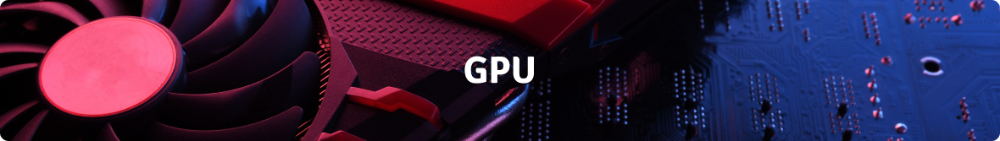

How to put build a mining rig
Read time: 15 minutes
Purchasing hardware
It’s important to note - you can buy a completely built PC.
Or you can purchase parts separately using a website’s PC builder feature. Something like newegg has a complete walk through and you can participate in their shuffle program to get hard to find chips.
The third option is to completely build it yourself and find the best deal you can on individual parts. This tutorial will illustrate this path.
The biggest thing you’ll want to consider is - what do I want to do with this machine?
Will this be used for more than mining? Do I require a lot of storage? - do I have a lot of photos or videos? Will I be downloading a lot of blockchain data? What about write/read speeds? Should I go for a newer hard drive or an older model? Memory, processors, power supplies, etc. will all be covered in this tutorial. Indeed, this process starts with the following questionnaire which assists in hardware selections and basic understanding of a computing system.
Storage
The first question you need to answer is: how much storage do you need? These days, it's possible to have over a hundred 5 terabyte+ drives controlled by the same computer. So feel free to think big if you can afford it! For crypto purposes, I can tell you the Ergo blockchain required to run the Ergo wallet is currently at about 15 gigabytes.
The second question to ask is: how fast do I need this storage to be? When you ask this question, keep this in mind - your system is only as fast as your worst bottleneck across all components. In other words, if you had the world's fastest hard drive, it doesn’t matter if the system’s processor can’t keep up. When it comes to hard drive speed, a general rule of thumb is that a magnetic drive is slower than a solid state drive. And a solid state drive is slower than an m2 solid state drive.
Presently, blockchain and blockchain wallet software require good read/write speed in order to download and sync a fresh copy of the blockchain, or else you spend weeks trying to sync. Once the chain is synced however, magnetic drives are sufficient to download new blocks and run the chain.
Memory
The next system component to consider is memory. Memory is faster than hard drive storage, but is temporary in nature. Think of it as a cache for programs loaded from the hard drive. The Ergo blockchain requires at least 4gb of memory to download and sync, but benefits from 8gb. When it comes to memory size, think “as much as I can fit and afford”.
As far as types, a general rule of thumb is: the higher the DDR, the faster it is. I.e. DDR3 is faster than DDR2. DDR5 is faster than DD4. Again, if you select a fast m2 solid state drive hard drive, your system will be degraded if you pair it with a slow DD2 set of memory sticks.
The amount of sticks you may purchase depends on the motherboard you select in a few steps. However, you’ll want to select a few more components before you choose a motherboard to tie it all together!
Processing Units
Now that you’ve selected your storage devices, it’s time to select processing power! In general, there’s two types of processors out there - a central processing unit and a graphics processing unit. More accurately, a serial processing unit and a parallel processing unit respectively. For mining, you will require both processors, but the parallel unit (the GPU) is the most important piece of this whole system.
GPU
Mining is parallel in nature. It’s similar to guessing at an iPhone password - two people (or serial processors) can split the work by asking person A to start at 499 and going down and person B starting at 501 and going up. With a parallel unit, we can guess all 9999 possibilities at once and process chunks of data instead of pieces.
We recommend visiting our hardware comparison page for assistance in selecting a graphics processing unit. This list includes stocked vendors.
Important! - Make sure your GPU unit has enough on board memory to mine your selected coin. Ergo requires 4gb on the chip.
Every computer still needs a serial processor however - a central processing unit, CPU. When it comes to CPUs, the first question you’ll want to ask yourself is: what type of architecture do I need?
Newer architectures such as ARM have been patented to include better energy savings and more power. Their cutting edgeness may mean some software isn’t supported by it just yet however. The older architecture, x86, is the most popular architecture and is widely supported. In my experience, I recommend sticking to x86 for Ergo.
From there, you’ll just need to ask “how much power do I need?”. Remember, mining rigs benefit from parallel (GPU) processing, not serial processing. Other functions like video editing, graphic design, or gaming will benefit however. If you are still wondering whether or not you need a strong CPU, keep in mind that most software functions have been developed around serial processing. Very few specialized applications, such as gaming and mining, have benefited from parallelism.
Vendor is a matter of preference, but in general - an Intel I7 is stronger than an I5 and a Ryzen 9 is stronger than a Ryzen 7.
Motherboard
Now that you know what type of components you’d like to run, it’s time to choose the glue to put it all together - the motherboard.
The motherboard is the chip that coordinates the communication between all the specific chips you just selected. Your primary goal in selecting a motherboard is ensuring that it has sufficient slots for your components. You’ll want to check the specs of your components to see the type of slots they need. A few examples may include ensuring you have m2 slots if you chose an m2 hard drive, or making sure you have the right type of slot for your processing units.
Anothering thing you’ll want to consider is the amount of slots. Do you have enough memory slots? Enough hard drive slots?
One important thing to remember is that mining power directly correlates to the amount of GPUs in the machine. If mining power is the primary goal, make sure you get a motherboard that has multiple GPU slots.
Another important thing to remember is physical space. Newer GPUs are huge! Memory sticks are smaller. SSD hard drives require more physical space, but are easier to cool than M2 hard drives. The motherboard’s “form factor” is a primary factor you’ll want to consider here. The larger the form factor, the more components it can hold, and the more physical space you’ll have, but it also means more energy and a larger case.
Yet another important consideration is your physical spacing of components. Optimal airflow is critical. We’ll cover cooling in greater detail in the next section.
The motherboard’s chipset is a general processing chip that facilitates the communication between all these components. This can be a system bottleneck, so review your chip before your purchase.
The final thing to consider is onboard components. The motherboard often comes with less performance critical components such as USB drives, bluetooth, wireless, and even basic graphics capability. You can accept these onboard components and purchase a motherboard with some included functionality, or you can select stronger components if performance is an issue. I.e. Some people opt to purchase a good networking chipset. If you choose specialized components for any of these areas, make sure your motherboard supports it as well.
Cooling
All this power! All this surging electrical energy leaves a waste product (heat) that requires a category of maintenance hardware to keep it functioning, and that’s cooling.
“Cooling” is an overall effort that includes a multitude of external factors such as the location of the machine and time of the year. To assist in this effort, you’ll need to purchase important components just as air circulating fans and processor cooling units. Cooling can include dehumidification as well.
Certain components such as GPUs come with onboard fans. You can also purchase additional liquid CPU coolers as well. I recommend you purchase these if you can!
A general rule of thumb is that you need a way for external cool air to get in, and for hot waste air to get out. Certain machine cases are designed for this specifically, but you may also run across certain setups with no case at all and huge external fans cooling exposed components.
Interesting thought - Is this heat really “waste”? What can we use it for?
There are plenty of creative ways to cool components which I invite you to explore. In general, you want to keep chips cooler than 80 degree celsius, but follow your specific hardware’s recommendations.
Alert: Make sure your purchase comes with, or you purchase, a high quality thermal paste to attach heatsinks to processing units.
Power
All this power! All this surging electrical energy leaves a waste product (heat) that requires a category of maintenance hardware to keep it functioning, and that’s cooling.
“Cooling” is an overall effort that includes a multitude of external factors such as the location of the machine and time of the year. To assist in this effort, you’ll need to purchase important components just as air circulating fans and processor cooling units. Cooling can include dehumidification as well.
Certain components such as GPUs come with onboard fans. You can also purchase additional liquid CPU coolers as well. I recommend you purchase these if you can!
A general rule of thumb is that you need a way for external cool air to get in, and for hot waste air to get out. Certain machine cases are designed for this specifically, but you may also run across certain setups with no case at all and huge external fans cooling exposed components.
Interesting thought - Is this heat really “waste”? What can we use it for?
There are plenty of creative ways to cool components which I invite you to explore. In general, you want to keep chips cooler than 80 degree celsius, but follow your specific hardware’s recommendations.
Alert: Make sure your purchase comes with, or you purchase, a high quality thermal paste to attach heatsinks to processing units.
Your case
Finally, your case! As I’ve mentioned, it’s also possible to have no case at all. Certain high performance mining rigs are held together with affordable, yet custom, home depot metal material; even wood.
If you decide to buy a commercial case however, you’ll want to consider size and support. If you purchased a large form factor motherboard, make sure you have a large form factor case. Also, make sure you have enough screw slots to properly place your components. Additionally, certain components we selected earlier may not have come with screws. M2 hard drives are notorious for this.
The two final factors to consider here are cooling, and “cool” ;). As I’ve drilled, your case needs to have sufficient airflow to cool the components it houses. It’s also responsible for housing the cool LED lights you may see on some machines! I invite you to research commercial cases that are specifically made for cooling.
Software
For a guide on setting your rig up for Ergo mining, I recommend you visit our /how-to-mine-ergo guide.
Before that however, you’ll need operating system software to run the machine. Make sure you purchase the correct operating software for your CPU architecture.
A popular, but commercial, operating system is Windows. If you’re more tech oriented and/or are looking for something that is free and open sourced, Linux Ubuntu is an excellent option. If you plan on accessing this machine passively and/or remotely, the server edition of your operating system may be appropriate.
Helpful tip - certain motherboards and/or cpus come bundled with operating systems.
Putting it all together!
Finally, once all your components have arrived, you’re finally ready to get it running. You’ll want to follow your component’s guides for instructions on how to connect everything together. Be sure to keep an eye out for component clearance and airflow. It’s not uncommon to have to return a part or two when you find it doesn’t fit.
As soon as everything is connected and snug, you’re ready to turn it on. You’ll want to access the machine's boot menu to install the chosen operating system. Follow your operating system’s guide to install your operating system.
And you’re finally set! Welcome to your new machine.
Please visit our /how-to-mine-ergo page for additional assistance in setting up your ergo mining rig software!